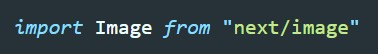
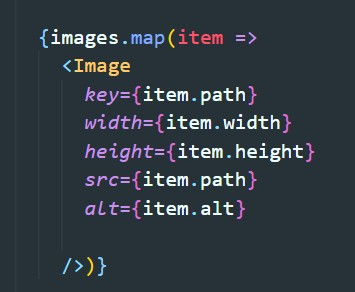

Компонент Image
Next JS предоставляет свой компонент Image
Синтаксис
Импорт

Использование

Атрибуты
- width, height - ширина и высота картинки. Обязательный атрибут, без него Next выдаст ошибку.
- layout - определяет как будет вести себя картинка при изменении ширины экрана. Варианты:
- fill - Если у родителя есть несколько изображений то они все будут наложены друг на друга. Напоминает position: absolute. Родителем является блок с position relative. Заставляет изображение расширяться, чтобы заполнить его родительский элемент. изображение искажается. Что бы изображение не искажалось можно использовать атрибут objectFit
- fixed - фиксированный размер изображения, при изменении ширины экрана будут появляться полосы прокрутки у браузера
- responsive - займут всю ширину родителя и будут уменькашься при уменьшении родителя. при том что изображение не будет искажаться
- objectFit - Работает в связкке со свойством layout = fill. То же что и object-fit в css. те же варианты с такими же свойствами
- objectPosition - Работает в связкке со свойством layout = fill. Тоже самое что в CSS object-position
- loading - способ загрузки изображения. По умолчанию имеет значение lazy т.е ленивая загрузка, очень положительно влияет на производительность.